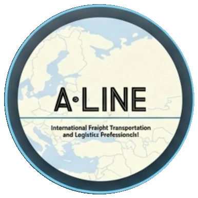
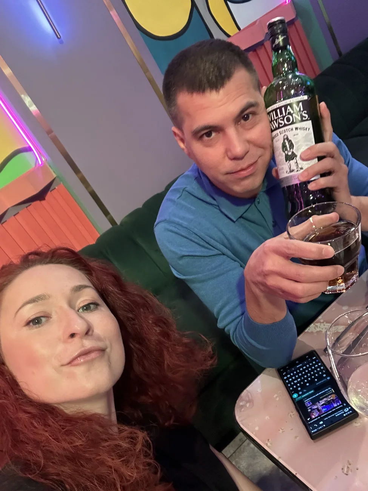

Запрос компании
Усилить команду, улучшить коммуникацию, повысить уверенность сотрудников и понять, почему текущие результаты не соответствуют ожиданиям бизнеса.
48 тренингов за год — системное развитие команды, мотивации и внутренних процессов.
Регулярная работа с людьми, которая помогает сотрудникам лучше понимать свои сильные стороны и эффективнее взаимодействовать.

Усилить команду, улучшить коммуникацию, повысить уверенность сотрудников и понять, почему текущие результаты не соответствуют ожиданиям бизнеса.
Еженедельные встречи по развитию команды, взаимодействию и сильным сторонам сотрудников. Не разовая мотивация, а последовательная работа на протяжении года.
Во время каждого приезда проходили две добровольные индивидуальные психологические сессии. Сотрудники исследовали сильные стороны и зоны роста.
В рамках сотрудничества также прорабатывались мотивационные инструменты, планёрки, декомпозиция целей, роли сотрудников и ответственность подразделений.
Регулярные встречи помогли укрепить командность, поддержать мотивацию и повысить вовлечённость. Участники индивидуальных сессий увереннее опирались на свои сильные стороны.
Год системной работы с людьми: 48 тренингов, индивидуальная психологическая поддержка и более осознанная, мотивированная и вовлечённая команда.

Нажмите на фотографию, чтобы увеличить